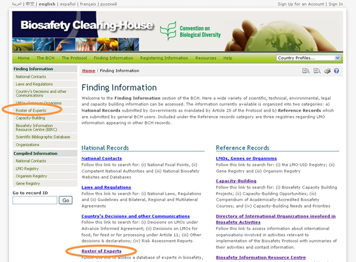
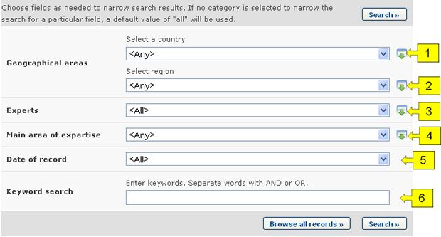
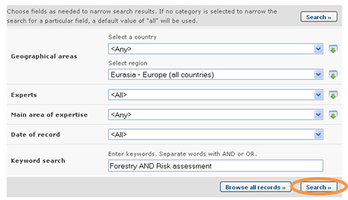
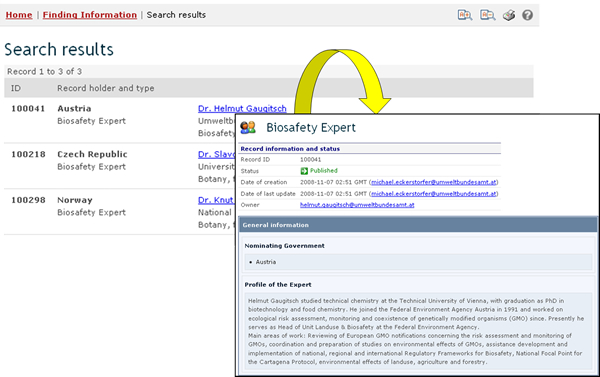

URL: http://bch.cbd.int/database/experts/
La lista de expertos fue establecida por la Conferencia de las Partes del Convenio sobre Diversidad Biológica (COP) cuando el Protocolo fue adoptado (véase Decisión EM-I/3 y Decisión BS-IV/4). El fin de esta lista de expertos es "prestar asesoramiento y otros tipos de apoyo, según corresponda y a solicitud, a las Partes que son países en desarrollo, en particular los menos adelantados y los pequeños Estados insulares en desarrollo, y países con economías en transición, proceder a la evaluación de riesgos, adoptar decisiones fundamentadas, desarrollar recursos nacionales de personal y promover el fortalecimiento institucional, en relación con los movimientos transfronterizos de OVM".
La COP-MOP, como órgano rector del Protocolo, decidió que el acceso a la lista de expertos se gestionará a través del CIISB, donde pueden obtenerse formularios de nominación a fin de que las Partes puedan proponer expertos. Los reportes de la base de datos de la lista de expertos y el fondo voluntario son accesibles bajo la sección de reportes de las páginas del Protocolo. Este punto es cubierto en "Informes Anuales de la Lista de Expertos"..
La página de búsqueda para la base de datos Lista de Expertos puede ser obtenida en el vínculo de Búsqueda de Información en el menú desplegable en la barra de navegación o en el vínculo en la barra lateral izquierda en la página Búsqueda de información. Estos vínculos llevan al usuario a la página de Búsqueda en la Lista de Expertos donde puede buscar expertos en bioseguridad nominados por Gobiernos.


En la página de Búsqueda en la Lista de Expertos hay varios campos de criterios de búsqueda:
-
País: Campo de lista de selección para seleccionar un país.
-
Grupo de países: Campo de lista de selección para seleccionar un grupo de países o región.
-
Expertos: Campo para agregar criterios de búsqeuda adicionales relacionados con expertos para refinar la búsqueda. Al seleccionar ítems en esta lista puede hacer aparecer los siguientes campos:
-
Nombre del experto: Campo de palabra clave para buscar por nombre del experto.
-
Nacionalidad: Lista de selección para limitar los resultados a aquellos expertos que sean de la nacionalidad especificada.
-
País que designa: Lista de selección para acotar los resultados de la búsqueda a aquellos expertos designados por el país seleccionado.
-
-
Área de especialización: Lista de selección para refinar los resultados de la búsqueda a aquellos expertos cuya área de especialización sea la especificada por el usuario.
-
Fecha del Registro: Campo de fecha para acotar la búsqueda a un cierto intervalo de tiempo.
-
Búsqueda por Palabra clave: Campo de palabra clave para refinar resultados según palabras claves.
Ver “cómo usar las páginas de búsqueda” para aprender sobre los tipos de campo y cómo operarlos.
Ejemplo. Un usuario desea encontrar expertos de Europa que tienen experiencia en silvicultura y evaluación de riesgo. El usuario (i) selecciona Eurasia – Europa (todos los países) en el cuadro Zonas Geográficas, grupo de países, y (ii) ingresa silvicultura y evaluación de riesgo en el cuadro de palabras clave.
Al hacer clic en el botón Realizar la búsqueda aparecen los resultados de búsqueda. Éstos muestran una lista de registros, ordenados por país. La información detallada de cada experto puede ser analizada seleccionando el nombre del experto, lo cual abre el registro correspondiente.


Esta imagen fue tomada en Febrero del 2010 con el único propósito de proveer un ejemplo sobre el uso del CIISB.